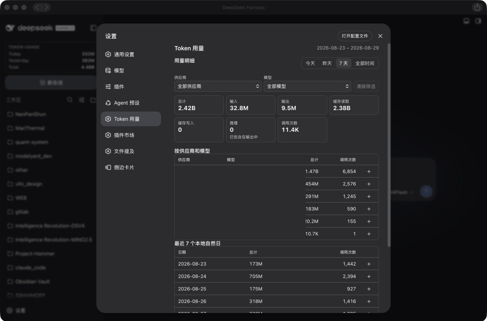

自动发现历史记录
自动查找 DSH 存储中的插件自有 Token 记录，不要求你维护路径或重复配置。
DeepSeek Harness 社区插件
面向 DeepSeek Harness Web Profile 的本地优先 Token 用量侧边栏和设置页。自动发现可用历史记录，保留准确的供应商和模型名称，让每个统计数字都能追溯。

为有用的历史记录而设计
插件跟随 DSH/provider 上报的用量记录，在紧凑、原生风格的界面中呈现统计结果。
自动查找 DSH 存储中的插件自有 Token 记录，不要求你维护路径或重复配置。
范围标签、筛选、指标、供应商/模型明细和最近本地日期都保持在更紧凑的设置页面里。
插件自有的 SQLite 账本使用 WAL 模式，保持统计写入稳定，并在 DSH 重启和升级后保留数据。
使用规范的调用身份和可安全重放的更新逻辑，避免重试和重复事件放大总量。
筛选直接使用 DSH 实际上报的供应商和模型名称，不再要求用户额外填写一套名称映射。
用量元数据保留在本机。账本不保存提示词、回复文本、工具输出、凭据或 API 密钥。
工作方式
插件在可用时使用权威运行时用量，保留原始名称，并如实说明能够恢复的历史范围。
读取 DSH/provider 的实时事件和本地可用历史中的已提交用量记录。
使用会话、轮次和步骤组成的规范身份，确保重放只计入一次。
把统计所需的元数据写入插件自有的本地 SQLite 账本。
展示总量、Token 分项、筛选、供应商/模型明细和最近本地自然日。
你可能想知道
不会。统计账本独立存放在 DSH 数据目录中，卸载插件不会自动删除它。
不会。插件使用 provider/runtime 上报的用量记录。推理是输出的细分展示，不会被重复加进总量。
不会。自动发现范围是有意收窄的，只查找 DSH 相关存储区域中可识别的插件自有记录。
不是。这是面向 DeepSeek Harness 的独立社区插件。